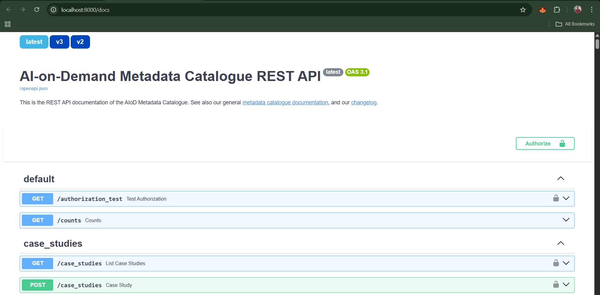
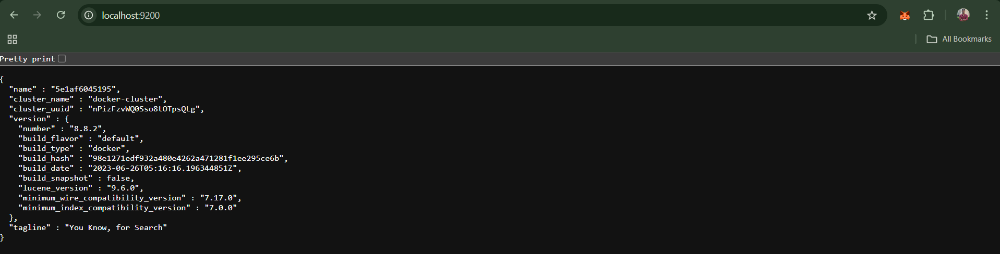

AI-on-Demand dev environment setup guide
This guide sets up a complete local development environment for AI-on-Demand, which consists of:
What you'll set up:
1. Python client library (aiondemand)
2. REST API backend service (AIOD-rest-api)
3. Development tools (linting, testing, pre-commit hooks)
Both repositories work together as a single system and should be tested together.
Prerequisites
- Python 3.10 or higher (check with command:
python -V) - pip package manager (check with command:
pip list) - Docker setup (check with command:
docker ps)
One-Time Initial Setup
Part 1: Setup aiondemand (Python Client)
Clone the repository:
Create and activate virtual environment:
Windows:
Mac/Linux:
Install Package with developer dependencies
Quick check:
Part 2: Setup AIOD-rest-api (Backend Service)
Clone the repository:
Configure environment:
Edit the .env file to enable local development mode (located at line no.: 4):
Build Docker images (one-time):
# Build specific images
docker compose build app
docker compose build deletion
# Build all images
docker compose build
# Run DB data migration
docker compose up fill-db-with-examples
- Note: Add this command in the
Dockerfileafter theapt-get installblock if the python package dependencies seem to be broken (happens sometimes in Windows):pip install --upgrade pip setuptools wheel
Running tests
Note: currently the tests are expected to fail. update regarding this is currently tracked here: https://github.com/aiondemand/AIOD-rest-api/issues/681Complete System Verification
After completing both setup parts, verify the entire system is working:
1. Verify Python Client Installation
cd aiondemand
.\venv\Scripts\activate # Windows
# source venv/bin/activate # Mac/Linux
python -c "import aiod; print(f'aiod version: {aiod.__version__}')"
2. Verify REST API Service
Start the services:
Check API documentation at: http://localhost:8000/docs

3. Verify data migration in database
As the mysql database does not expose any ports, we cannot check the data in tables directly using a db client. instead we can manually check from the openapi docs or run curl request on the actual fastpi endpoint to check if there is any data in the table:
4. Verify Elasticsearch
Go to http://localhost:9200 and login with:
- Username: elastic
- Password: changeme

Common Development Tasks
Using the SDK with a Local Backend
By default, the SDK (aiod) connects to the remote production backend at https://api.aiod.eu/. To use your locally running backend (for development or testing), update the API server URL in your code as follows:
1. Configure SDK to Use Local Backend
Set the API server URL before making any requests:
import aiod
# Point the SDK to your locally running backend
aiod.config.api_server = "http://localhost:8000/"
2. Fetch Data from Local Backend
Now you can use the SDK as usual, and it will communicate with your local backend. For example, to fetch a list of contacts (assuming your local database has data):
import aiod
# Ensure the SDK is using the local backend
aiod.config.api_server = "http://localhost:8000/"
# Fetch and print the list of contacts
contacts = aiod.contacts.get_list()
print(contacts)
To confirm your local server is set up perfectly, it should return a response like this:
platform platform_resource_identifier ... telephone identifier
0 example 1 ... [0032 xxxx xxxx] con_osweUoxaTYQDVuoEwz9HdWXx
[1 rows x 7 columns]
This will retrieve data from your locally running backend instead of the remote server. You can set aiod.config.api_server to any remote or local URL as needed.
Starting the Development Environment
Every time you work on the project:
-
Activate Python environment:
-
Start backend services:
-
Stop services when done:
Contributor Workflow Guide
Before raising a pull request, run these checks to ensure code quality:
Run Full Test Suite
cd aiondemand
.\venv\Scripts\activate # Windows
# source venv/bin/activate # Mac/Linux
python -m pytest -v